Processo em close, de cima ou na bancada, com as mãos do chef.
Texto curto na tela, que faz parte da narrativa.
Revelação de cor: a cena começa em preto e branco e a cor entra.
Um corte a cada 2 ou 3 segundos, com planos de detalhe longos o bastante para ver a comida.
Fechamento com tela preta e o @ do restaurante.
Vídeos que já fizemos para o Anexo
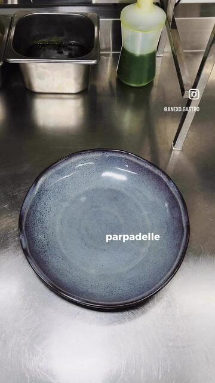
Pappardelle: do prato vazio…
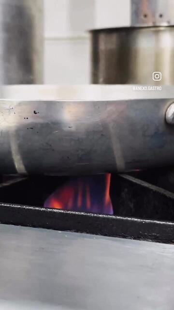
…ao processo
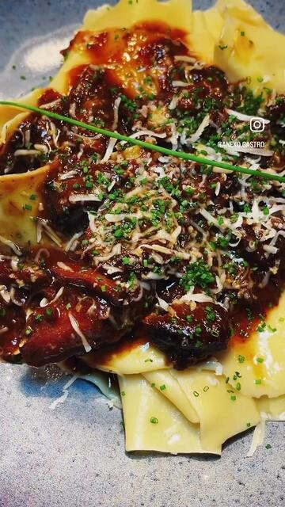
…e ao prato pronto
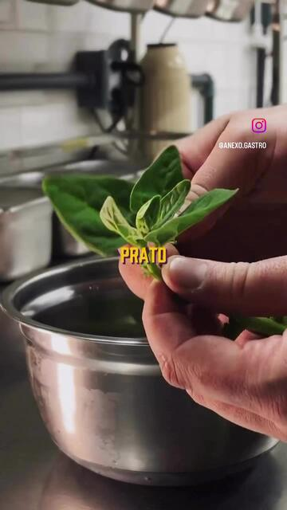
Palavras surgindo na tela
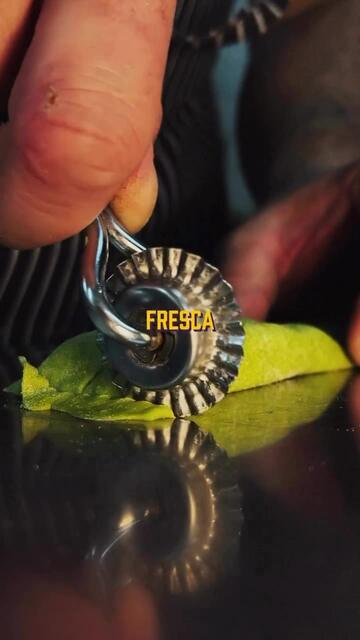
Close da massa
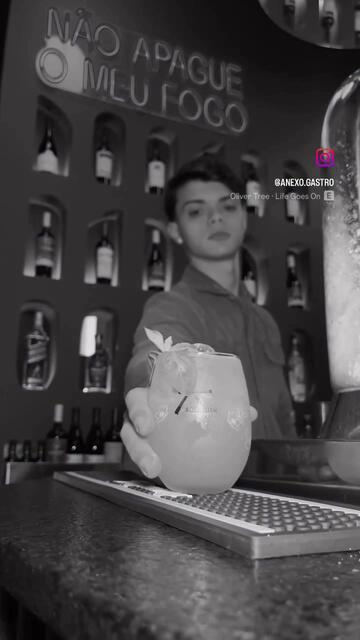
Revelação de cor: P&B…
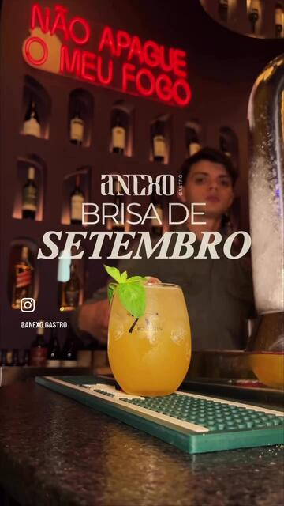
…e a cor entra
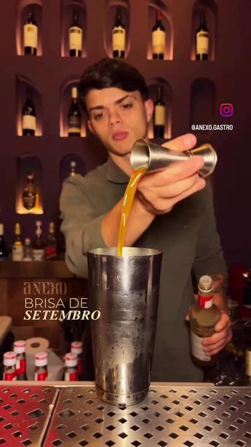
Preparo com o neon da casa
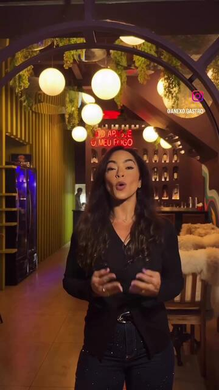
Fala da dona para a câmera
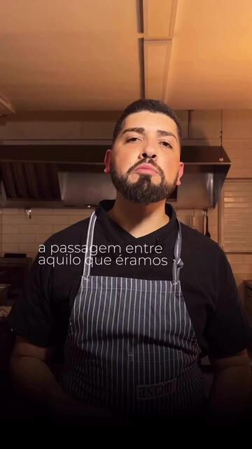
Fala do chef, legenda palavra a palavra
1
Decoração natalina
15sSem falaTrilha + texto
Ideia única: o restaurante é o presente. Só luz, detalhe e movimento. O vídeo é só da decoração, sem promoção.
Planos
Gancho0–2s
Decoração em preto e branco, e a cor entra quando as luzes acendem.
Plano 12–5s
Movimento de câmera avançando pela entrada decorada.
Plano 25–8s
Detalhe da mesa de Natal: taças, velas e guardanapo, com travelling lateral.
Plano 38–11s
Árvore ou guirlanda em plano aberto, com pessoas desfocadas ao fundo.
Final11–15s
Plano geral do salão com luzes, fechando com o nome do restaurante.
Texto na tela
O Natal chegou ao Anexo.
Quando gravar: no fim da tarde, com as luzes ligadas, antes de abrir.
Referência enviada pela dona
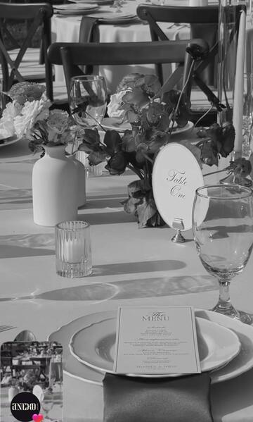
Mesa em preto e branco
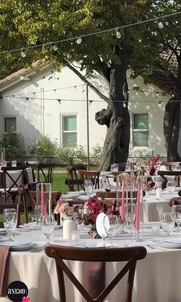
A cor entra no plano aberto
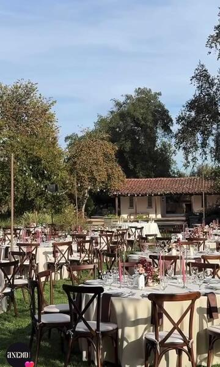
Plano geral com luzes
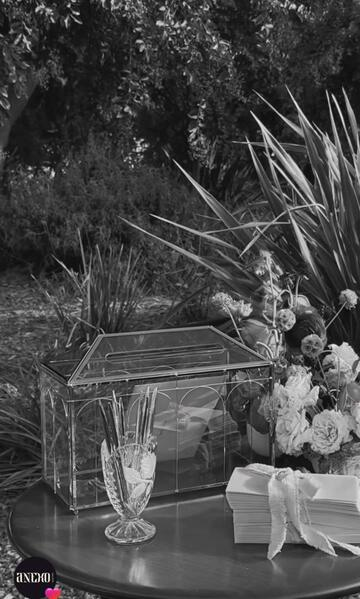
Detalhe na mesa
O que vamos aproveitar: começar em preto e branco e deixar a cor entrar com as luzes; detalhes de mesa e planos abertos do ambiente.
2
As pizzas do Anexo, com o chef
20sFala do chef
Ideia única: o chef explica por que a borda da pizza artesanal parece queimada e não é. Sem sabor específico: a variação aparece no final, com mais de uma pizza.
As falas são sugestão: o chef confirma o conteúdo e reescreve com as palavras dele.
Planos
Gancho0–3s
“Essa borda parece queimada, né? Mas não é.”Chef segurando uma fatia, mostrando a borda escura em close.
Plano 13–9s
“É a fermentação longa da massa e o forno bem quente.”Montagem vista de cima e pizza entrando no forno, com a voz do chef por cima.
Plano 29–14s
“O açúcar da massa caramelizou, e isso dá sabor, não amargor.”Close das manchas escuras da borda, em câmera lenta.
Plano 314–17s
(sem fala) · opcional Ao lado de uma fatia realmente queimada, para mostrar a diferença.
Final17–20s
“Vem provar no Anexo.”Duas ou três pizzas diferentes em sequência rápida, fechando na fatia sendo puxada.
Antes de gravar: confirmar com o chef a explicação (fermentação, temperatura do forno e açúcar caramelizado). O plano 3 só entra se der para fazer uma pizza queimada de propósito.
Referências de linguagem
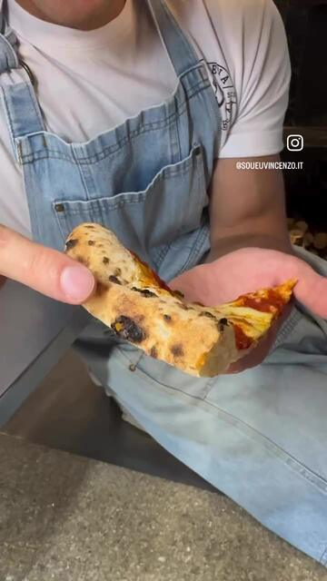
Gancho: borda escura em close
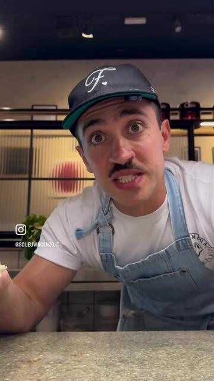
Chef explicando para a câmera
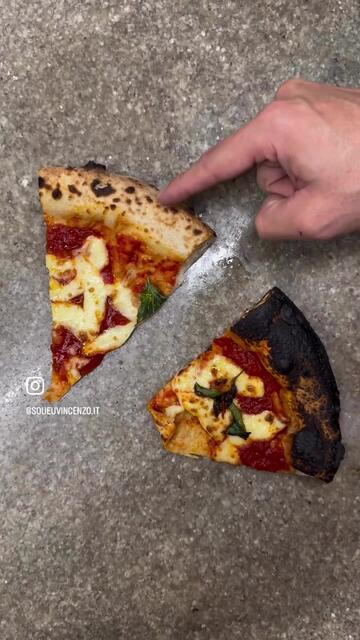
Fatia boa x fatia queimada
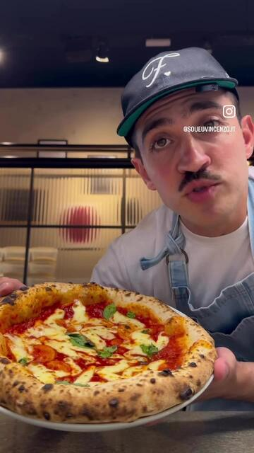
Pizza pronta no final
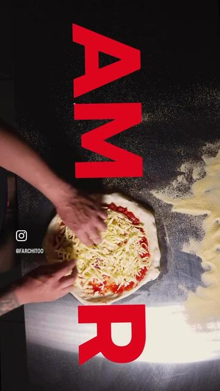
Montagem vista de cima
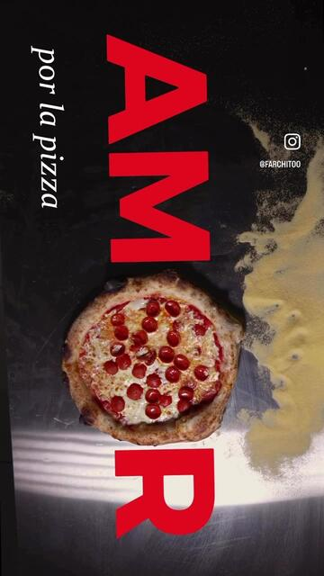
Do preparo ao resultado
O que vamos aproveitar: o chef olhando para a câmera no gancho, a borda em close e a comparação com a fatia queimada. Do vídeo de cima, o plano de montagem das mãos.
3
Tomahawk, chef explicando
até 30s3 blocos de fala
Formato: o chef fala em 3 blocos curtos de uns 10s, olhando para a câmera ou para o prato. Acompanhamentos conforme o post oficial: polenta crocante, creme de parmesão, cebola caramelizada, alho-poró e demi-glace.
Blocos
Gancho0–4s
“Esse é o Tomahawk, a estrela de novembro aqui no Anexo.”Corte em destaque, com o osso, plano médio, chef ao lado.
1 · O corte4–14s
“É um corte com osso longo, bem suculento, que a gente [técnica de preparo e ponto].”Close do osso e da carne, câmera subindo.
2 · Acompanha14–24s
“Vem com polenta crocante, creme de parmesão, cebola caramelizada, alho-poró e demi-glace.”Cada acompanhamento em um plano curto de detalhe, na ordem da fala.
Final24–30s
“Uma combinação intensa, cheia de personalidade. Vem experimentar no Anexo.”Chef fatiando, plano médio, e fechamento no prato.
[Entre colchetes]: será perguntado ao chef na hora da gravação. Cada bloco será gravado duas vezes; se passar de 30s, o bloco 2 fica só com os três acompanhamentos principais.
Referências de linguagem
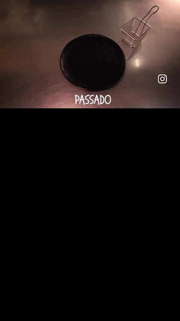
Prato vazio: “passado”
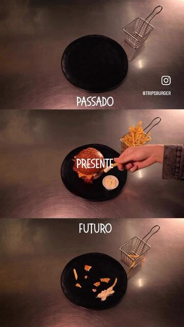
Prato servido: “presente”
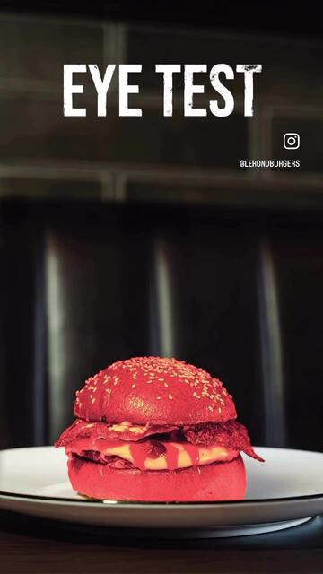
Texto grande no topo
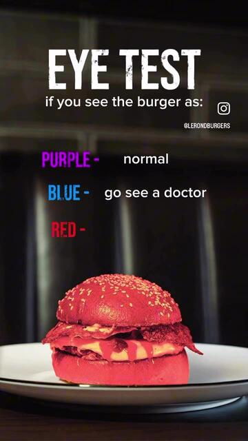
Frase mudando sobre o prato
O que vamos aproveitar: palavras curtas na tela que contam a história do prato e um plano forte do corte.
4
Tomahawk, a experiência
15sSem falaSom da faca
Ideia única: o momento do corte e do prato completo na mesa. Sem fala, com o som da faca e da carne.
Planos
Gancho0–2s
Close da faca entrando na carne, com o suco aparecendo.
Plano 12–6s
Prato chegando à mesa, com o osso em destaque.
Plano 26–10s
Acompanhamentos em detalhe: polenta crocante, creme de parmesão e demi-glace sendo servido.
Plano 310–13s
Primeira garfada, em close, sem mostrar o rosto inteiro.
Final13–15s
Plano aberto da mesa com o ambiente do salão ao fundo.
Texto na tela
TomahawkA estrela de novembro
Economia de tempo: os dois vídeos do tomahawk serão gravados no mesmo serviço, com o mesmo prato, mantendo a luz igual.
Referência de linguagem
Um plano forte do prato
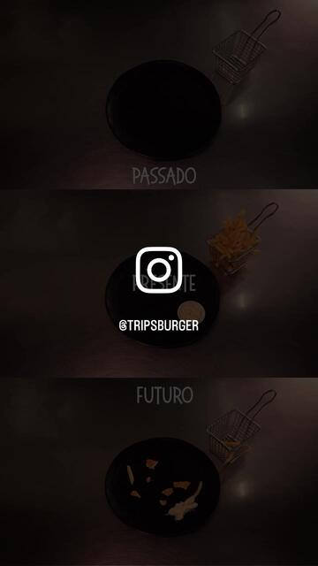
Palavra curta na tela
Captação
Checklist para o dia da gravação.
Em aberto
Técnica de preparo e ponto da carne do tomahawk: perguntar ao chef na hora da gravação.
Confirmar com o chef a explicação da borda da pizza (fermentação, forno e açúcar caramelizado).
Tudo certo?
Aprove os quatro roteiros de uma vez ou me conte o que ajustar.